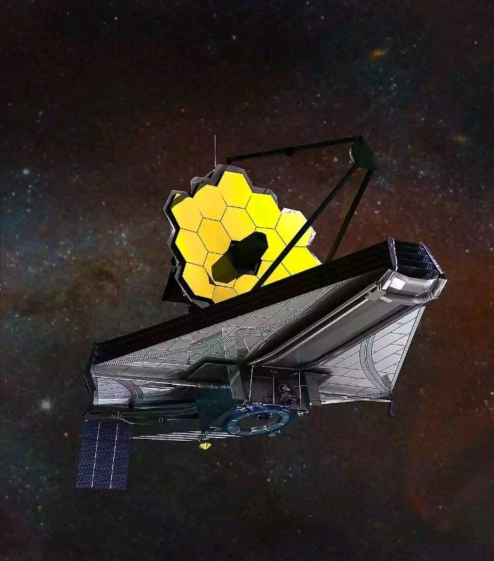

Atomic Number : 4
Atomic Mass : 9.01
Proton Number : 4
Neutron Number : 5
Category : Metal
Beryllium was discovered in 1798 by French chemist Louis-Nicolas Vauquelin while he was studying the minerals beryl and emerald. He found that these minerals contained a new element and named it “glucinium” because some of its compounds had a sweet taste. However, the name beryllium later became more widely used, based on the mineral beryl. In 1828, German chemist Friedrich Wöhler and French chemist Antoine Bussy independently produced beryllium as a metal. Since then, beryllium has become an important element with uses in aerospace, electronics, and scientific equipment.

State at room temperature: Solid Colour: Greyish-white Odour: Odourless Taste: Tasteless Density: 1.85 g/cm³ Melting point: 1287°C Boiling point: 2469°C Solubility: Insoluble in water Atomic form: Exists as individual Be atoms in its metallic structure
Beryllium is a relatively unreactive metal compared with other alkaline earth metals. It has an oxidation state of +2 and commonly forms compounds with other elements. Beryllium reacts with oxygen when heated to form beryllium oxide. It does not react easily with water because of a protective oxide layer on its surface. Beryllium reacts with acids and releases hydrogen gas. It can also react with strong bases because it is amphoteric.
Beryllium is a relatively rare element found naturally on Earth. It is mainly found in minerals such as beryl and bertrandite. Beryl is a mineral that contains beryllium and is also used to make gemstones such as emerald and aquamarine. Most beryllium is obtained from mineral deposits in countries such as the United States, China, and Madagascar. Beryllium is not usually found as a pure element in nature because it forms compounds with other elements.
Beryllium is a useful element and is used in many different areas. It is used in aerospace equipment because it is lightweight, strong, and can withstand high temperatures. Beryllium is also used in electrical and electronic equipment because it conducts electricity and heat well. It is used to make alloys with metals such as copper, creating strong and durable materials for tools and electrical components. Beryllium is also used in X-ray machines because it allows X-rays to pass through easily. Because beryllium is lightweight, strong, and has good thermal and electrical properties, it is especially useful in aerospace, electronics, and specialized equipment.

Beryllium is the fourth element on the periodic table and has the symbol Be. Beryllium is one of the lightest metals, making it useful when low weight is important. Beryllium is found in gemstones such as emerald and aquamarine because they contain beryllium. Beryllium is very stiff and strong for such a lightweight metal. Beryllium has a high melting point compared with many other light metals. Beryllium is used in spacecraft and satellites because it is lightweight and can withstand high temperatures. Beryllium is used in the James Webb Space Telescope because its mirrors are made from beryllium. Beryllium is also used in beryllium-copper alloys, which are strong and good electrical conductors.